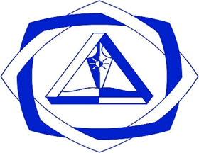

ДОРНОГОВЬ АЙМГИЙН ЗАМЫН-ҮҮД СУМЫН ЕРӨНХИЙ БОЛОВСРОЛЫН 1-ДҮГЭЭР СУРГУУЛИЙН ДОТУУР БАЙРНЫ "ХҮҮХЭД ХӨГЖИЛИЙН ТАНХИМ"-ЫН ТӨСӨЛ

ТӨСЛИЙН ЗОРИЛГО: Дорноговь аймгийн Замын-Үүд сумын ерөнхий боловсролын 1-дүгээр сургуулийн дотуур байр нь 2007 онд ашиглалтанд орсон 70 хүүхдийн багтаамжтай. 2025-2026 оны хичээлийн жилд малчин өрхийн болоод төмөр замын зөрлөгийн ойрын сумдын хүүхдүүдээс бүрдсэн нийт 32 хүүхэд амьдарч байна.
Дотуур байрны сурагчдын эрүүл мэнд, аюулгүй байдлыг ханган, амьдрах тухтай нөхцлийг бүрдүүлж сурагчдын чөлөөт цагийг зөв боловсон өнгөрүүлэх, амьдарч буй байрандаа хөгжих боломжийг олгох зорилгоор хүүхэд хөгжлийн танхимтай болох шаардлага эн тэргүүнд байна.
Хүүхэд хөгжлийн танхим байгуулагдсанаар дотуур байрны сурагчдын сурлагын чанар сайжирч, дотуур байрандаа хичээл давтлага хийх, ном унших, шатар даам тоглох, багаар ажиллах, урлаг дуу бүжиг, төрөл бүрийн сургалт хэлэлцүүлэг хийх, зурагт кино үзэх ..... гм чөлөөт цагаа зөв боловсон өнгөрүүлэх авьяас чадвар хөгжих нөхцөл бүрдэх болно.